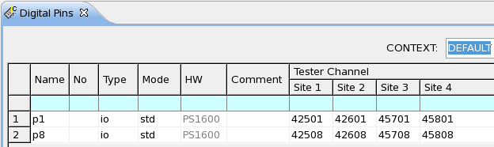
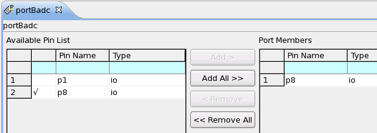
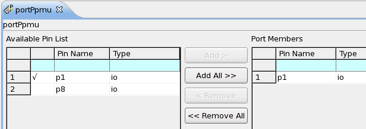
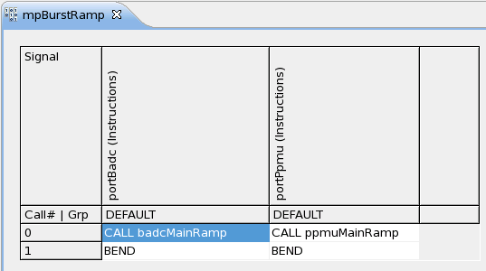
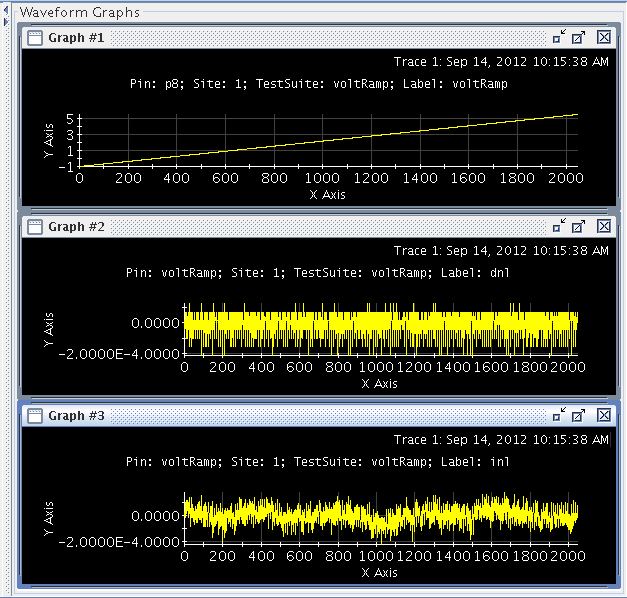

How to use PPMU as AWG and BADC as digitizer together
A PS1600 card can be used to generate analog waveforms and digitize them. You can use a digital pin as AWG and another digital pin as digitizer.
About this task
The example below describes the steps of setting up the PPMU as AWG and using the BADC as digitizer to measure the generated waveforms from PPMU. No DUT board is required.
The example uses the internal DC rail to connect PPMU and BADC. If using an external interconnect board, you must adapt the relay settings.
Before you begin
A PS1600 card must be available in your tester. Remove any DUT board from the test head.
Procedures
Step1: prepare the pin configuration file
- In the Pin Settings editor, click the Digital
Pins editor to define the following pins.

- In the Ports editor, define one port for the BADC to measure
waveforms and another port for the PPMU to generate waveforms.


Step2: prepare the timing and level setup files
- Refer to PS1600 timing and vector setup to set up your timing configuration.
- Refer to PS1600 level setup to set up your level configuration.
Step3: prepare the patterns
- In the Pattern Explorer, create main labels and sub-labels for your BADC and PPMU ports. Refer to the description of Step 3 in PPMU as AWG and BADC as Digitizer.
- Create a Multi-Port burst label for your BADC and PPMU ports. In this way, generating a
waveform with the PPMU and measuring it with the BADC can be executed synchronously.

Step4: create test methods
The main part of the test method consists of the following three steps:
- Waveform generation
- Happens once during first TM-Execution
- Test execution
- Connect instruments
- Test execution
- Disconnect instruments
- Result upload
- Upload results for all sites in parallel
- Evaluate data (PUT_DEBUG)
Here is the example code for a voltage ramp waveform.
- Sub-function
definitions
virtual void createPpmuRamp() { ANALOG_WAVEFORM ramp("ramp"); ramp.definition(TM::RAMP) .direction(TM::POS) .min(-1 V) .max(5.5 V) .samples(2048); DC_WAVEFORM dcWaveform; dcWaveform.vForce(ramp) .vRange(6 V) .iRange(1 mA) .sampleVectorDistance(1024); PATTERN_CONTROLLER patternControllerDcWaveForm; patternControllerDcWaveForm.label("ppmuSubRamp","portPpmu").add(dcWaveform); patternControllerDcWaveForm.setup(); } virtual void createBadcMeasure() { BADC_MEASURE badcMeasure; badcMeasure.pin("portBadc").numberOfSamples(32); PATTERN_CONTROLLER patternControllerBadcMeasure; patternControllerBadcMeasure.label("badcSubRampMeasure","portBadc").add(badcMeasure); patternControllerBadcMeasure.setup(); } virtual void connectInstruments() { PPMU_SETTING ppmuSetup; BADC_SETTING badcSetting; FLEX_RELAY connect; TASK_LIST taskList; ppmuSetup.pin("p1").vForce(-1 V).iRange(1 mA).min(0 mA).max(100 uA); badcSetting.pin("p8").min(-2 V).max(6 V); connect.pin("p1").set("DCPM"); connect.pin("p8").set("DC","PMU","MUX_VM_HIZ"); connect.wait(2 ms); taskList.add(ppmuSetup).add(badcSetting).add(connect).execute(); } virtual void disconnectInstruments() { FLEX_RELAY disconnectPpmu; disconnectPpmu.pin("p1,p8").set("IDLE","OFF"); disconnectPpmu.execute(); } - Main function
definition
virtual void run() { DC_RESULT_ACCESSOR result; /*** 1) Waveform generation ***/ if ( firstRun ) { createBadcMeasure(); createPpmuRamp(); firstRun = false; } /*** 2) Test execution ***/ ON_FIRST_INVOCATION_BEGIN(); connectInstruments(); FUNCTIONAL_TEST(); disconnectInstruments(); /*** 3) Result upload ***/ result.uploadResult("p8",TM::RESULT_INDEX); ON_FIRST_INVOCATION_END(); ARRAY_D waveform = result.getValues("p8"); if ( waveform.size() > 0 ) { PUT_DEBUG("p8","voltRamp",waveform); ARRAY_D inl,dnl; LINEARtype lin; DSP_LINEAR(waveform, &lin, dnl,inl, MIN_RMS); PUT_DEBUG("voltRamp","dnl",dnl); PUT_DEBUG("voltRamp","inl",inl); cout << "Site: " << CURRENT_SITE_NUMBER() << " DNL: " << lin.damax * 1000 << " mV; " << endl; cout << "Site: " << CURRENT_SITE_NUMBER() << " INL: " << lin.iamax * 1000 << " mV; " << endl; } return; }
Step5: create test suites to call the UTM
Generate a testflow and insert test suites, which use your prepared UTM codes from step 4. After running the code example above, you can observe the result in the Signal Analyzer as shown below.

Results
You will see the generated waveform from the PPMU has been digitized by the BADC.
Functional changes
- Introduced in SmarTest 7.2.0